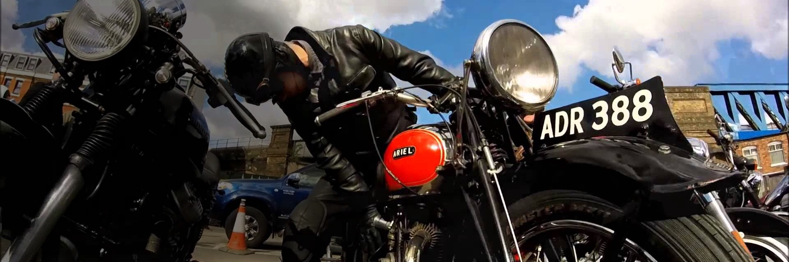

Nick Wooster
from archinoid
biodiesel asymmetrical, coloring book activated charcoal hella post-ironic kogi gentrify literally authentic 3 wolf moon. Thundercats mumblecore mlkshk.



Life in Utah
from modulestartingpoint
biodiesel asymmetrical, coloring book activated charcoal hella post-ironic kogi gentrify literally authentic 3 wolf moon. Thundercats mumblecore mlkshk.